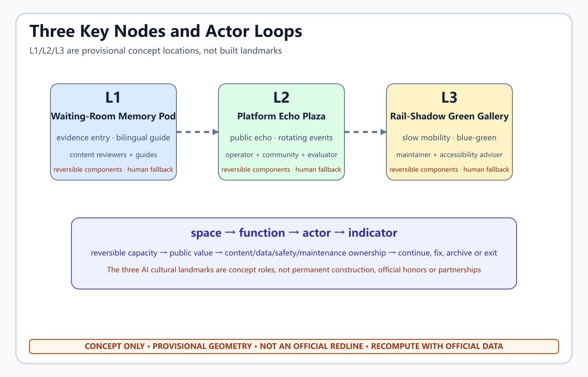

Centennial Platform · Qinghuayuan Station Anchor
One-Belt concept visual index: three positions, five functions, Three Districts–Two Wings, three nodes, twelve scenario cards and T1–T3 industry test protocols.
concept proposalprovisional geometrybilingualaggregate-only · human review · no over-surveillanceOffline review display only; not a statutory plan, engineering, approval, investment, operating or partnership commitment.
One-Belt structure
Three positions
Centennial Jingzhang Culture; Urban AI Life Experience; AI Integration Innovation.
Five functions
Full-stack autonomy; global ecology; AI+ scenarios; active city; governance voice.
Three Districts–Two Wings
AI Origin Community, Zhongzhiyuan AI Acceleration, Dazhongsi AI Industry Cluster; Zhongguancun Technology Services and Xiaoyuehe Scenario Enablement.

External coordination is separate: Beiwei Community, Future Science City, Huairou Science City, E-Town and Beijing–Tianjin–Hebei; all to verify, none presented as an existing partnership.
Nodes and spatial functions
L1 Memory Pod
Evidence entry: verified bilingual guidance, reading and community room; paper, audio, tactile and staff alternatives.
L2 Echo Plaza
Public echo: rotating exhibits, markets and developer demos; removable components, stop on crowd/sound threshold.
L3 Green Gallery
Slow connection: low-stimulus guidance, blue-green rest and maintenance learning; no road/utility engineering claim.


AI ecology and open scenarios
Six layers are content/heritage, models/compute, data/privacy, space/facilities, operation/governance and scenarios/talent. Eight global AI entries are verification queues only; twelve cards record problem, input, capability, flow, space, actor, data boundary, fallback, metric, exit and status.

| Test | Scope | Gate |
|---|---|---|
| T1 Content and bilingual guidance | Source review, controlled translation draft, two human reviews | 100% citation match; take down misquote/unclear rights |
| T2 Accessibility and low-tech experience | Obstacle list, paper map, subtitles/audio, staff escort | Closed obstacle status; site-confirmed threshold; withdrawable |
| T3 Open company scenario | Synthetic/aggregate data, timed prototype, public retrospective | Zero hard bans; takeover ≤2 min; deletion available |
Metrics and phases


Implementation, rights and exit
P1 evidence/low-risk prototype → P2 public-experience small test → P3 open ecology/conversion; each has RACI, G0–G3 gates, acceptance thresholds, failure exit, data deletion and monthly/quarterly/annual maintenance. The developer community uses problem briefs, open-scenario days and safe failure summaries to connect talent and companies, without job, procurement, investment or partnership promises.
Sources, fonts, code, GeoJSON, bilingual figures and AI-assisted copy are listed in the rights ledger and source registry; `COMMUNITY-DISPLAY-ONLY` does not grant commercial, trademark, training or derivative rights.
Package links
Main: proposal.md · Chinese: proposal.md · Report: proposal.en.html · proposal.html · Self-check: self_check.json
This visual index supports concept review; authoritative package fields are in GeoJSON, metrics, matrices, risk and self-check outputs.